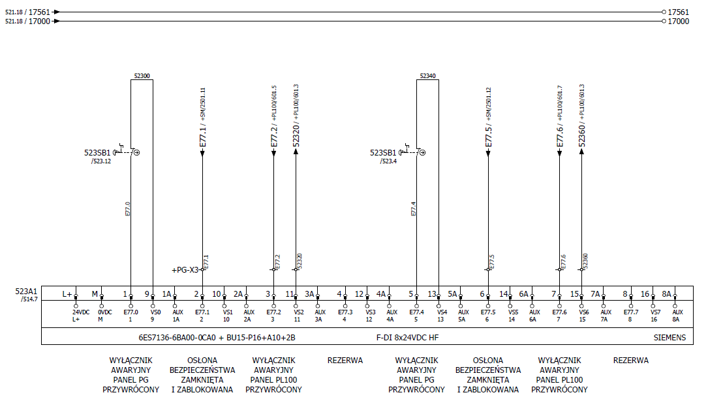

Wyłącznik awaryjny
Konfiguracja cyfrowych wejść failsafe dla wyłącznika awaryjnego panel PG i wyłącznika awaryjnego panel PL100. Szczegółowe objaśnienia użytych parametrów można znaleźć w pomocy online (STEP7). Podłączenie wejść cyfrowych failsafe można zobaczyć w schemacie w zakładce schemat.
Konfiguracja modułów F-DI dla wyłączników awaryjnych
Urządzenie ET200 SP z modułami safety 523A1 do którego podłączone są wyłączniki awaryjne.

Ustawienie paremetrów kanałów urządzenia ET200 SP modułu 523A1 do którego podłączone są sygnały:
● Kanał 0, 4 - wyłącznik awaryjny panel PG przywrócony.

Gdy kanały modułu są podłączone, jak w tym przypadku, należy w menu rozwijanym "Sensor evoluation" wybrać "1oo2 evaluation, equivalent" - sygnał sprawdzany dwukanałowo (sygnał sprawdzany jest przez dwa kanały), a także w menu rozwijanym "Sensor supply" wybrać "Sensor supply 0" dla kanału 0 i "Sensor supply 4" dla kanału 4 - zasilanie wewnętrzne (zasilanie kanału jest z modułu 523A1). Kanał musi być zaznaczony "ptaczkiem" Activated - kanał 0, 4.
● Kanał 1, 5 - osłona bezpieczeństwa zamknięta i zablokowana.

Gdy kanały modułu są podłączone, jak w tym przypadku, należy w menu rozwijanym "Sensor evoluation" wybrać "1oo2 evaluation, equivalent" - sygnał sprawdzany dwukanałowo (sygnał sprawdzany jest przez dwa kanały), a także w menu rozwijanym "Sensor supply" wybrać "External sensor supply" - zasilanie zewnętrze (zasilanie kanału nie jest z modułu 523A1). Kanał musi być zaznaczony "ptaczkiem" Activated - kanał 1, 5.
● Kanał 2, 6 - wyłącznik awaryjny panel PL100 przywrócony.

Gdy kanały modułu są podłączone, jak w tym przypadku, należy w menu rozwijanym "Sensor evoluation" wybrać "1oo2 evaluation, equivalent" - sygnał sprawdzany dwukanałowo (sygnał sprawdzany jest przez dwa kanały), a także w menu rozwijanym "Sensor supply" wybrać "Sensor supply 2" dla kanału 2 i "Sensor supply 6" dla kanału 6 - zasilanie wewnętrzne (zasilanie kanału jest z modułu 523A1). Kanał musi być zaznaczony "ptaczkiem" Activated - kanał 2, 6.
● Kanał 3, 7 - Rezerwa (Brak podłączenia sygnałów do kanału).

Gdy kanały modułu są nie podłączone, jak w tym przypadku, należy dezaktywować te kanały poprzez odznaczenia "ptaszka" Activated - kanał 3, 7.
Program safety dla wyłączników awaryjnych
Poniżej został przedstawiony część programu safety PLC gdzie są wykorzystane wejścia cyfrowe failsafe oraz funkcję dla wyłączników awaryjnych.
.png)
.png)
.png)
.png)
.png)
.png)
.png)
Program safty PLC w całości można zobaczyć w projekcie "AP0071-PLC001-V100" od Celi nr 9 w TIA Portal.